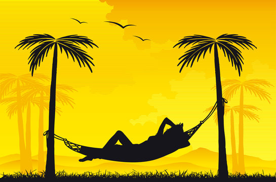
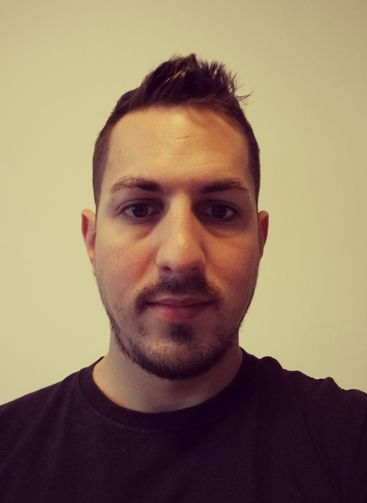

Budapesten nőttem fel ami a fővárosa Magyaroszágnak. Pozitív, extrovertált ember vagyok, aki szeret másokon segíteni, és keresi az új lehetőségeket, amit az élet egyik napról a másikra kínál. Az a fajta ember vagyok, aki mindig szereti az élet új területeit kutatni, és igyekszik megtalálni a dolgoknak azt a részét, ami leginkább passzol a személyiségemhez. Szeretek időt tölteni a családommal, olvasni, zenét hallgatni vagy videojátékokat játszani. Olyan sportokat is szeretek, mint a foci, kosárlabda, tenisz, F1. Néha szeretek semmit sem csinálni, de hamar elkezdek unatkozni és kezdem kényelmetlenül érezni magam a lelkiismeretem miatt.#Lorinc.

Lorinc Nagy
lighting specialist
fromBudapest, HU

My favourite quote
"Don't be afraid to take a big step if one is indicated. You can't cross a chasm in two small jumps".